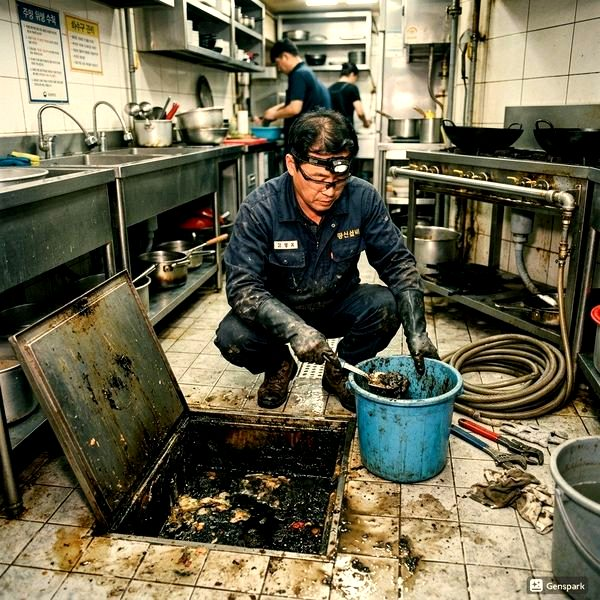
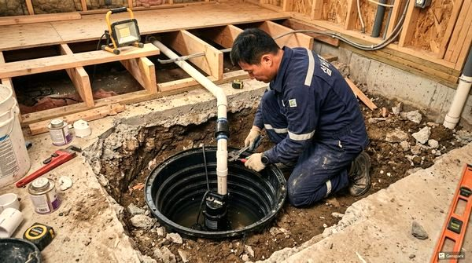
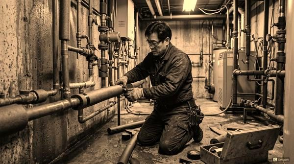

부동산 매매 전 배관 점검 - 노후 배관 체크리스트
2026년 4월 12일 | 제우스시설관리
집을 매매할 때 인테리어와 위치만 보고 결정하면 큰 낭패를 볼 수 있습니다. 겉으로 깔끔해 보여도 벽 속 배관이 노후되었다면, 입주 후 누수와 악취 문제가 발생하고 수백만 원의 수리비가 들 수 있습니다.

매매 전 배관 점검 체크리스트: ① 수도꼭지를 모두 틀어 수압을 확인하세요. 수압이 약하면 배관 내부 부식이나 막힘이 의심됩니다. ② 온수 출수 시간을 확인하세요. 30초 이상 걸리면 급탕 배관에 문제가 있을 수 있습니다.
③ 모든 배수구에 물을 흘려 배수 속도를 확인하세요. 물이 느리게 빠지면 배수관 막힘이 진행 중입니다. ④ 변기를 내려 물내림 힘을 확인하세요. ⑤ 천장과 벽 모서리에 물 얼룩이나 곰팡이가 있는지 확인하세요. 이는 누수의 흔적입니다.

전문가 점검을 강력히 권장합니다. 제우스시설관리는 내시경 카메라로 배관 내부 상태를 직접 확인하고, 관로탐지기로 벽 속 배관의 누수 여부를 비파괴로 진단합니다. 점검 결과를 사진과 영상으로 제공하여 매매 협상에 활용할 수 있습니다.

배관 상태에 따라 매매가 협상이 가능합니다. 전체 교체가 필요하다면 수백만 원의 할인을 받을 수 있습니다. 현명한 부동산 거래를 위해 전문가 배관 점검을 받으세요. 28분 내 출동, 전화: 010-4406-1788